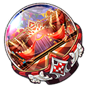

추천 광추
「아하」가 처음 울리는 순간
기초 속도 +12 · 팀 방어력 무시 16%
효과 자세히
다른 단일 아군에게 스킬 사용 시 웃음 +10pt와 방어력 무시 부여. 웃음 효과 1턴 재사용 대기.
슈룸 모험기
환락도 +20%
효과 자세히
환락 스킬 후 적 받는 환락 피해 +10% 2턴.
추천 유물
꿈같은 유희 속 별을 밝히는 연극인 4 · 신의 순간의 환락 2
- 머리
 주옵션HP부옵션속도 · 치명타 확률 · 치명타 피해
주옵션HP부옵션속도 · 치명타 확률 · 치명타 피해 - 손
 주옵션공격력부옵션속도 · 치명타 확률 · 치명타 피해
주옵션공격력부옵션속도 · 치명타 확률 · 치명타 피해 - 몸통
 주옵션치명타 확률부옵션속도 · 치명타 피해
주옵션치명타 확률부옵션속도 · 치명타 피해 - 다리
 주옵션속도부옵션치명타 확률 · 치명타 피해
주옵션속도부옵션치명타 확률 · 치명타 피해 - 구체

주옵션HP% / 방어력%부옵션속도 · 치명타 확률 · 치명타 피해 - 매듭
 주옵션HP% / 방어력%부옵션속도 · 치명타 확률 · 치명타 피해
주옵션HP% / 방어력%부옵션속도 · 치명타 확률 · 치명타 피해
이 조합을 추천하는 이유
사도 환락도 +16%와 팀 치피 +12%. 속도 +6%와 환락도 40%이면 첫 행동 +40%.
꿈같은 유희 속 별을 밝히는 연극인 4 · 부러진 용골 2
- 머리
주옵션HP부옵션속도 · 치명타 확률 · 치명타 피해
- 손
주옵션공격력부옵션속도 · 치명타 확률 · 치명타 피해
- 몸통
주옵션치명타 확률부옵션속도 · 치명타 피해
- 다리
주옵션속도부옵션치명타 확률 · 치명타 피해
- 구체
 주옵션HP% / 방어력%부옵션속도 · 치명타 확률 · 치명타 피해
주옵션HP% / 방어력%부옵션속도 · 치명타 확률 · 치명타 피해 - 매듭
 주옵션HP% / 방어력%부옵션속도 · 치명타 확률 · 치명타 피해
주옵션HP% / 방어력%부옵션속도 · 치명타 확률 · 치명타 피해
이 조합을 추천하는 이유
빠른 첫 행동이 덜 중요하고 효과 저항 30%를 채울 수 있으면 팀 치피 +10%.
이 정도면 잘 키웠다
세팅에 따른 목표값 · —는 출처에 별도 기준 없음
| 스탯 | 추천 스탯 | 준종결 | 종결 |
|---|---|---|---|
| 속도 | 177+ | — | — |
| 치명타 확률 | 88%[1]아하 2돌 치명타 확률 +8% · 효광 전용 광추 +10%. | — | — |
육성 단계의 기준
준종결 수치는 원본 시트에 없습니다. 추천은 ‘세팅’ 기준이며 ‘종결’에 해당 캐릭터 행이 없습니다.
스탯 조건과 각주
- 치명타 확률 · 추천 스탯 아하 2돌 치명타 확률 +8% · 효광 전용 광추 +10%. ↑
성혼과 추천 돌파
명함부터 승격. 첫 필살기를 당기려면 1돌, 개별 승격 강화는 2돌. 은랑의 히든 스코어 보너스 턴은 은랑 2돌 조건도 필요.
1전투 시작 원력 +5pt추천
필드에 있을 때 팀 환락 피해 15% 증소.
2환락만상 치확 +20% · 방어력 무시 60%추천
명함은 각각 12%·30%. 환락 캐릭터의 개별 승격 효과도 2단계로 강화.
3필살기 +2 · 일반 공격·환락 스킬 +1
해당 스킬과 대응 강화 스킬의 레벨을 올린다.
4아하 타임 기록 확정 피해 배율 +25% 상대 증가
환락 스킬 Lv.10 기준 기록 20% → 25%. 동료 보유 솜씨 합도 자신의 환락 피해에 집계.
5전투 스킬·특성 +2 · 환락 스킬 +1
해당 스킬과 대응 강화 스킬의 레벨을 올린다.
6최소 목표 최대 HP 20%의 환락 채무
첫 필살기 후 아하 행동 게이지 +100%, 웃음 +100pt.
추천 파티


기본 운영과 행적
기본 운영
주 딜러를 사도로 지정. 사도·자신의 행동과 웃음 40pt 달성으로 원력 확보. 원력 8pt에서 필살기, 승격은 3턴.
행적 육성 순서
특성 → 전투 스킬 → 환락 스킬 → 필살기 → 일반 공격. 승급 4단계 치유·실드 원력 획득 먼저.
아하 속도 계산기 →